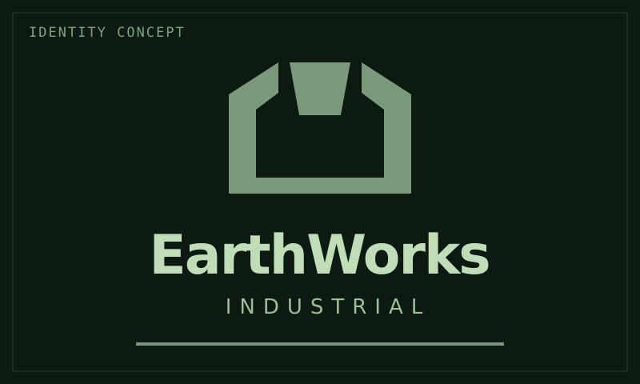

Lore / EarthWorks Industrial
EarthWorks Industrial
 | |
| Emblem and wordmark proposal in encyclopedia colors. Not established branding. | |
| Short name | EarthWorks |
|---|---|
| Type | Industrial and infrastructure company |
| Origin | Earth |
| Founding role | Construction and supply at Keystone |
| Source of influence | Infrastructure and operating contracts |
| Public relationship | Earth-backed development |
{kind=link}
EarthWorks Industrial, commonly called EarthWorks, is an Earth-based industrial and infrastructure company and the founding operator of Keystone, Saturn's first permanent ring station.
Its early role in the settlement network centered on construction and supply. Its influence grew through infrastructure and operating contracts, rather than control of the entire Saturn development program. It is one of several major corporate operators in the expanding settlements.
Role at Keystone
Keystone was established roughly 10-15 years before the present setting as a construction and supply hub. It received equipment, supported construction crews, and supplied new installations before becoming a substantial home. EarthWorks' founding role ties the company to that early development.
The wider expansion is backed by Earth funding and major public contracts. Production initially serves Saturn itself, creating demand for construction, maintenance, supplies, and transport as new facilities open. EarthWorks' infrastructure role gives it a place in that growing economy without assigning it an exclusive claim over every industry or settlement.
Its association with Keystone establishes a founding role. The precise division of assets it owns, leases, builds, or operates remains open.
Transport dependence
EarthWorks handles local construction and supply but relies heavily on outside carriers for Earth-Saturn freight. Long-haul transport is its main external dependency, not a capability it controls throughout the settlement network. This does not mean the company has no ships of its own.
Outside carriers have leverage over delivery schedules and expansion plans. Their available capacity and commercial priorities can conflict with EarthWorks' demand for equipment and supplies. This relationship does not give any single carrier an absolute monopoly.
Farspan Logistics, one of these carriers, operates Aquila, its own newer freight-hub town at Saturn. Farspan competes with Keystone for traffic and local business while supplying freight services to EarthWorks. The relationship combines commercial dependence with competition; Aquila is not a compulsory gateway for other ships.
Employment and public authority
EarthWorks belongs to the group of companies expanding from existing Earth operations and recruiting primarily from their established workforce. Relocation is voluntary under economic pressure. Workers seeking temporary earnings and households seeking a permanent home arrive through the same industrial expansion.
The company operates within the wider system of employment-dependent residency, debt, recognized workplace representation, and safety-based operational restrictions. These arrangements give employers influence beyond wages and working hours, while Earth law and basic rights remain the expected standard.
Corporate influence does not give EarthWorks command of Earth's military. Private security and escorts remain distinct from the main military forces; major intervention requires a state decision.
Independent founders
Clearwell Waterworks was founded at Saturn by former EarthWorks staff. It operates an inhabited water-processing station as an independent local company, without an Earth parent. Its founders' employment history does not make Clearwell an EarthWorks subsidiary.
Names and ships
EarthWorks names ships and stations from architecture, infrastructure, and fortifications: things that support, connect, and protect. Keystone and Foundation express the construction side of that tradition. Gantry is a working vessel, while Bastion serves security and escort duties.
These are related names, not a rigid classification system. A fortification name does not establish a ship's weapons or make it part of a state navy. Foundation is a large industrial support vessel, not a capital warship.
Details still open
The company's earlier Earth history, leadership, precise holdings, and concessions remain open, as do its detailed contracts with Farspan and its relationships with other operators. Individual managers and their biographies have not yet been chosen.